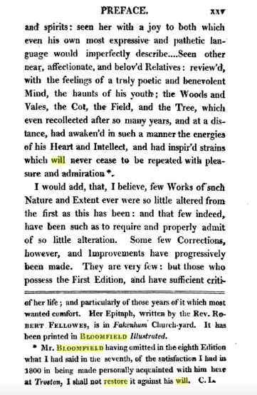

Problems with Patrons and Publishers: the Plight of the Labouring-class Poet, by Tim Fulford
As a poor artisan, Robert Bloomfield had little knowledge of how to get his poetry published. Books cost too much for most of the labouring classes to own many, even if they could read well enough to enjoy them (although Bloomfield had himself benefitted by inheriting the tiny collection of a fellow shoemaker). Booksellers were busy commercial people, with pretensions to being gentlemen; most of their clients and authors were from the gentlemanly classes. It was not surprising, therefore, that Bloomfield’s efforts to find a London bookseller to publish his work fell flat. It was only in 1798 when his brother George showed the manuscript of The Farmer’s Boy to a gentleman who lived near the scenes described in the poem that publication become a possibility. Capel Lofft (1751-1824) was a radical Whig lawyer as well as a country squire, and as such believed himself to be a ‘friend of the people’, an opinion that recommended the poem to him.
Lofft was an astute choice on George’s part, for he was not simply a traditional patron who would be prepared to offer a local man of talent a small pension as part of his paternalist duty, but also a poet and editor with influence in the expanding publishing market in which magazines and journals had begun to flourish. He had commercial experience as well as the paternalist attitudes of a traditional country landowner. Impressed by the poem both in its own right and as evidence that the poor were not naturally inferior, he sent it to Thomas Hill (1760-1840), a man of letters who was well-connected on the London literary scene. Hill arranged to have it published by the firm of Vernor and Hood, publishers of the journal he edited, The Monthly Mirror. Hill’s imprimatur assured Vernor and Hood that it would find a sale sufficient to repay their costs – not least because it could be puffed in the magazines they also published and in which Hill and Lofft reviewed.
The Farmer’s Boy that Thomas Hood published on 1 March 1800 was not quite the manuscript as submitted by George Bloomfield to Lofft in 1798. Lofft took it upon himself to revise what he read. The effect of these changes was to make The Farmer’s Boy more ‘tasteful’, more detached from the labouring-class locutions, and more generic (because its language was deracinated from the language community of rural Suffolk). Bloomfield was not aware of these changes: the first he saw of the published poem was in March 1800, and he then discovered that Lofft had added a well-meaning but condescending Preface. This told Bloomfield’s life story, emphasising his rural naivety and natural gentility. It prepared bookbuyers to encounter a work of natural genius achieved by a sensitive, humble family man – very much still a farmer’s boy rather than a mature adult Londoner. Lofft’s prefatory framing patronised Bloomfield, but thereby made him suitable for both aristocratic patrons who wished to reward natural genius from their regions and middle-class patrons of booksellers’ shops who could support him by buying the poem. It left Bloomfield embarrassed, however, because it put his private life on parade and used the rural simplicity that he had shown when he first came to London as a boy to define his character as a man.
Lofft’s publicity strategy worked: the reviews followed the lead of the Preface, relaying the story of Bloomfield’s deserving life. In doing so, they were responding to Lofft’s presentation of the poet, and also to Bloomfield’s own choice of a child narrator, highly unusual for a locodescriptive and Georgic poem in the Thomsonian tradition. Instead of Thomson’s disembodied, distant narrator, Bloomfield chose not simply a farmworker, as in Stephen Duck’s and Mary Collier’s labouring-class revisions of the Georgic tradition, but a boy. This choice gave him a narrator who could be present without being wholly involved in the grown-up world he witnessed—as if an unobserved observer. In the gap between the adult writer and his boy narrator, and between the boy and the adults within the poem, distance, loneliness and pathos enter. Bloomfield’s boy stands at a remove, looking on. He is not quite one of the lads and certainly not a man, and when he speaks of work with the authority born of experience he does so not to challenge the poetic idealisations that depict peasants as fortunate sons of the soil who are contented in their work, but to record his misery and fear when tasked with spending hour after hour alone in the field scaring crows. Rural labour, this implies, can be isolating and soul destroying even if not backbreaking. Unlike the ploughmen and the threshers, or the milkmaids and the washerwomen, the boy does not get to be one of a team that communally takes pride in its strength, skill and usefulness.
The public’s sympathies were engaged and it began to buy the poem in larger numbers than anyone expected, making Bloomfield the first publishing sensation of the nineteenth-century mass-market press. Second and third editions followed later in 1800, in cheaper demi octavo and octavo sizes. In the third, Lofft made a major addition to the paratextual material that would turn out to have severe consequences for his relationship with the poem and its author. He added an appendix in which he complained at length about his having been removed from his role as a justice of the peace on the grounds, he suspected, of his radical politics. The removal had little or nothing to do with Bloomfield’s poem; the appendix therefore did nothing more than reveal Lofft’s egotism and his proprietorial attitude towards the work he had brought to public attention. The Farmer’s Boy was, the appendix suggested, a place for Lofft to parade his goodwill and air his grievances. It was his, the patron’s, work almost as much as that of Bloomfield, who was his client and was to be approached through him, his verse bracketed by Lofft’s prose.
The Appendix distressed Bloomfield and the publisher, Hood, because it put Lofft’s personal affairs between the poet and the reader, and introduced contentious political matters to a volume they had tried to keep free of radicalism so as not to alarm reviewers and purchasers. Put simply, Lofft had become a threat to the poet’s reputation and the publisher’s profits. In the fifth edition (1801), they persuaded Lofft to add this note exculpating Bloomfield:
I wish it to be understood, that neither for my political Sentiments, Opinions, and Conduct, nor for any thing which I have said that personally concerns myself in the introductory part of this Appendix, is Mr. Bloomfield in the smallest degree responsible. Those therefore who dislike either the sentiments or the mode of expression must, in mere justice, impute them to me alone, and in no respect as any way implicating him. He wishes, I believe, to decline Politics and Controversy altogether; and I wish no man to mix in either farther than he feels it to be a Duty.
A tension was now evident: the power relations of patron and client did not harmonise with those of editor and author. Lofft’s underlying conception of what and who the publication was for (fellow Suffolk gentlefolk who bought the book so as to support worthy local causes) was at odds with Hood’s eye on the wider reading public, whom he supposed to want uncontroversial pastoral pleasure. The split became wider in October 1801, as Vernor and Hood prepared a sixth edition. Hill and Hood pressured Bloomfield to gain Lofft’s consent to drop the appendix (Lofft having by this point been restored to the bench). Lofft, however, let Bloomfield know that if the cuts were made he would ensure he became known as an ingrate: Bloomfield, having so little social status, could not risk appearing thus to the gentlemen and aristocrats who had supported the work, and was left pleading with Hill and Hood to leave the appendix and the note in place. Caught between patron and publisher, Bloomfield found himself to be the property of others (Hood retained half the copyright)—his case a symptom of the changes produced by the rapid expansion of the book market and the concomitant diminution of the role of patron and rise of that of the bookseller.
Although Bloomfield’s plea worked, and Lofft’s embarrassing grandstanding was left in place in the sixth and seventh editions, the difficulty was not resolved. By 1803 he and Lofft were estranged, Lofft having been offended by the removal of his footnotes commenting on the poems in Bloomfield’s second collection Rural Tales (1802). In the eighth edition, of 1805, Lofft’s insertions were removed; Lofft’s voice presenting the biographical account of Bloomfield’s early life was replaced by Bloomfield’s own; some of the flattering commentary on the poem by Lofft’s friends was deleted. The aim, apparently, was not just to strip Lofft from the paratext, but also to chart what he had done to the text. As a result, Lofft’s words no longer prepared the reader to encounter the boyish rustic poet: that poet appeared as an intelligent, straightforward man speaking to men (Bloomfield had by then read Wordsworth’s preface to that relatively poorly-selling collection of rural poems, Lyrical Ballads).
The tussle was not over: in the ninth edition (1806) Lofft reasserted himself, adding notes indicating his displeasure at the omission of his words from the eighth and again delivering his political opinions. He also added occasional snide comments in footnotes:

Thus the struggle for supervision of Bloomfield’s verse and biography, and, still more, the resentment of poet and publisher by patron, was made apparent to all readers. Lofft’s remarks remained in later lifetime editions of the poem (1808, 1810, 1811, 1815, 1820): he had, it might seem, the last (and first) word.
Not so: in 1809 the Poems of Robert Bloomfield was published – a collection of all the poet’s major publications to that date. Produced by the new stereotype method, so that it could be reissued again and again without the need to set up new type, this collected edition was supervised by Bloomfield himself, and featured a Farmer’s Boy from which Lofft’s voice was largely excised. For the first time, Lofft’s 1799 alterations of the verse were largely removed in favour of what Bloomfield had written in the original MS. Poem as well as preface was now in Bloomfield’s words, and these words were plainer and more colloquial than anything previously published in his name. Since the stereotype edition was reissued in 1814, 1817 and 1821 there were effectively two competing versions of The Farmer’s Boy in circulation, vividly demonstrating the contested status of the poem and the inability of labouring-class authors, even when supported by their publishers, to gain control of their work. They could not extricate themselves from gentlemanly patrons without losing the editorial support that they needed to get into print. The personal price for Bloomfield was anger, resentment, anxiety and depression, as it had been for Ann Yearsley and would be for John Clare; the public cost was a damaged reputation with readers, making it harder to succeed as an author in the long run.